Pupil’s Book
My Lovely School · Pupil’s Book · pages 9–11. All six activities are preserved in source order; editorial practice controls are kept distinct from the printed text.
1. Listen and read.
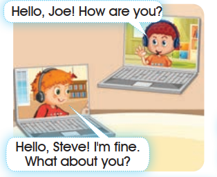
Hello, Joe! How are you?
Hello, Steve! I'm fine. What about you?
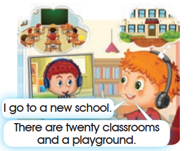
I go to a new school.
There are twenty classrooms and a playground.
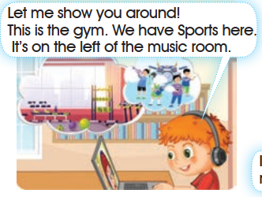
Let me show you around! This is the gym. We have Sports here. It's on the left of the music room.
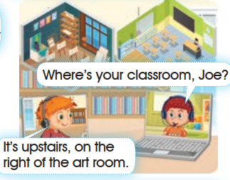
Where's your classroom, Joe?
It's upstairs, on the right of the art room.
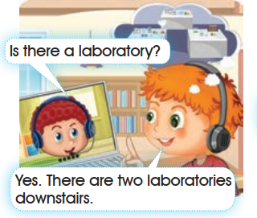
Is there a laboratory?
Yes. There are two laboratories downstairs.
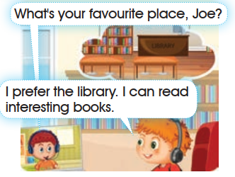
What's your favourite place, Joe?
I prefer the library. I can read interesting books.
Open the source page · Pupil’s Book · p. 9
The original supplied image, unchanged. Open it at full size to review the artwork and print.
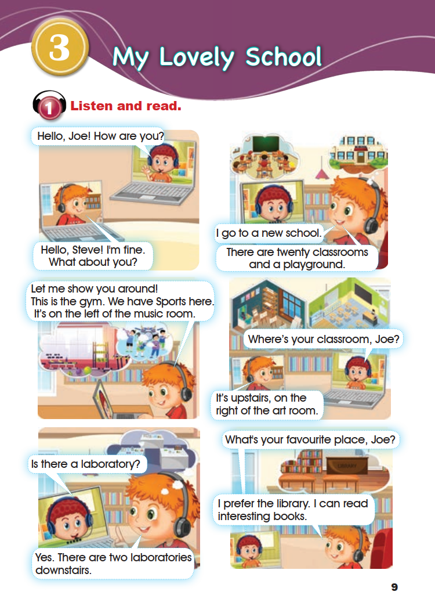
2. Let’s learn!
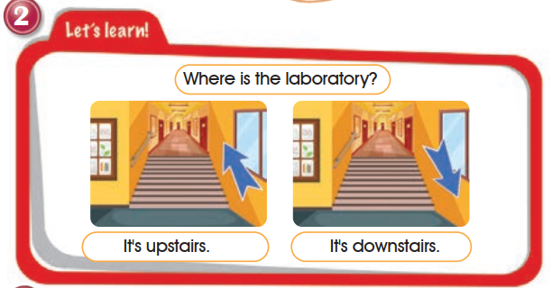
Where is the laboratory?
It's upstairs.
It's downstairs.
The first sentence is above both pictures. “It's upstairs.” belongs to the left/up-arrow picture; “It's downstairs.” belongs to the right/down-arrow picture.
3. Ask and answer.
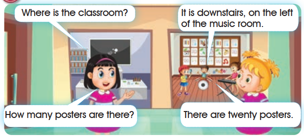
Where is the classroom?
It is downstairs, on the left of the music room.
How many posters are there?
There are twenty posters.
4. Look, read and match.
The pictures stay in their original top-to-bottom order. Letters a, b and c are added interface labels. Choose a picture for each sentence, then check your matches.
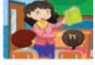
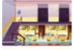
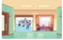
Open the source page · Pupil’s Book · p. 10
The original supplied image, unchanged. Open it at full size to review the artwork and print.
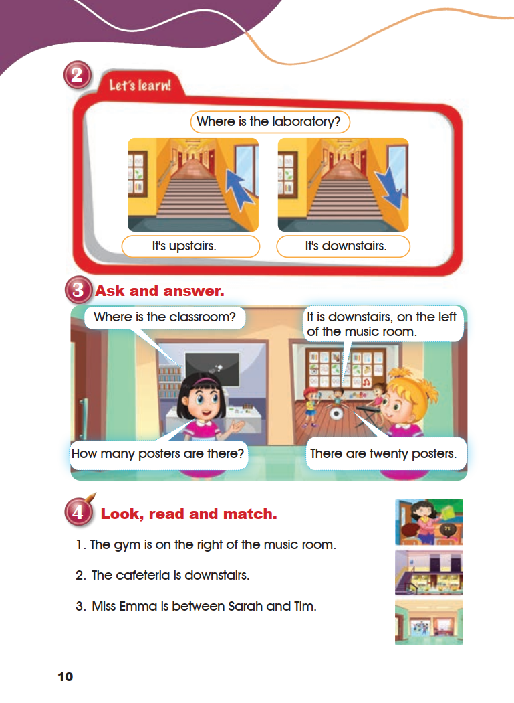
5. Listen and sing.
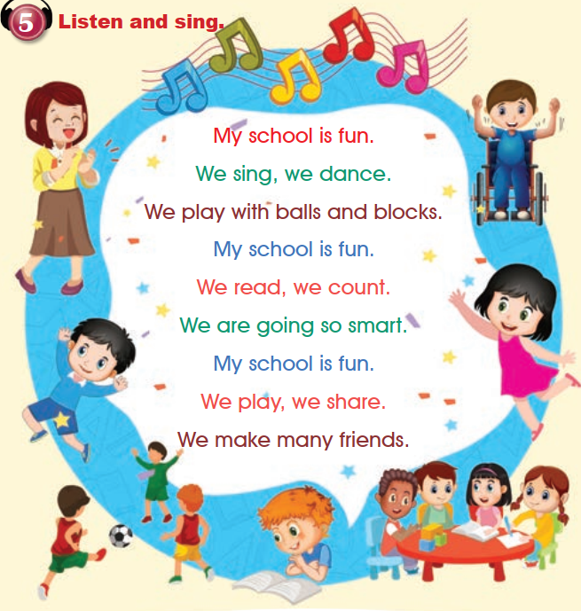
- My school is fun.
- We sing, we dance.
- We play with balls and blocks.
- My school is fun.
- We read, we count.
- We are going so smart.
- My school is fun.
- We play, we share.
- We make many friends.
The printed line “We are going so smart.” is kept exactly as shown.
6. Listen to the following sounds and words, then repeat them.

ea
meat
eat
Open the source page · Pupil’s Book · p. 11
The original supplied image, unchanged. Open it at full size to review the artwork and print.
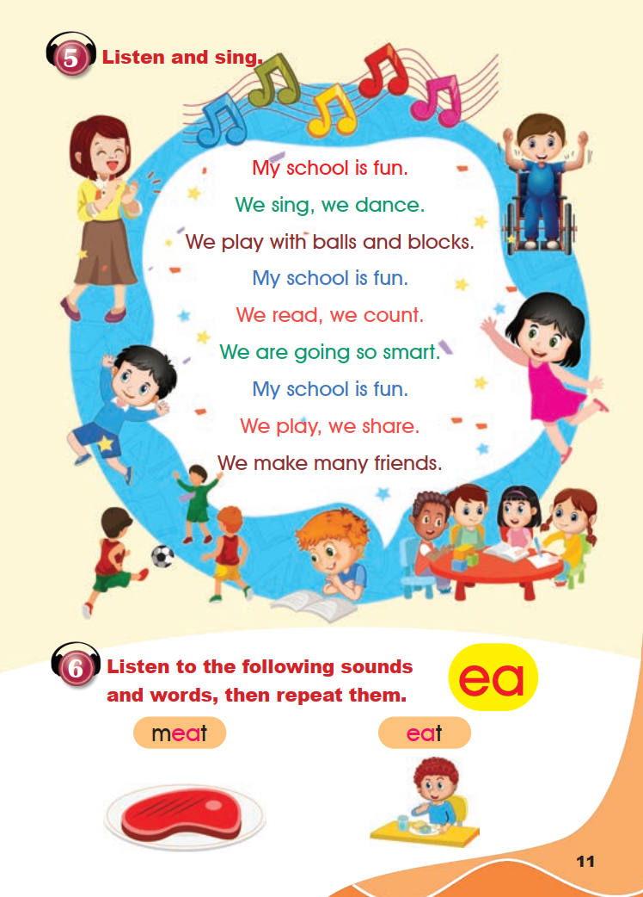